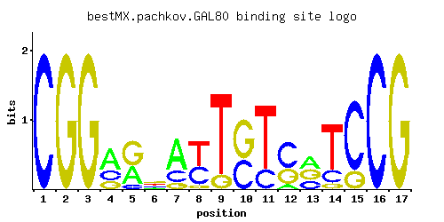

GAL80
YML051W
Transcriptional regulator involved in the repression of GAL genes in the absence of galactose; inhibits transcriptional activation by Gal4p; inhibition relieved by Gal3p or Gal1p binding
Best-performing DNA-binding model.

View and copy the recommended matrices ↘
A | 0.001 0.001 0.001 0.547 0.367 0.181 0.631 0.001 0.001 0.001 0.001 0.107 0.380 0.001 0.001 0.001 0.001 C | 1.000 0.001 0.001 0.248 0.088 0.184 0.237 0.386 0.001 0.427 0.240 0.565 0.258 0.200 0.800 1.000 0.001 G | 0.001 1.000 1.000 0.205 0.545 0.385 0.132 0.086 0.154 0.573 0.001 0.328 0.362 0.081 0.200 0.001 1.000 T | 0.001 0.001 0.001 0.001 0.001 0.249 0.001 0.528 0.846 0.001 0.760 0.001 0.001 0.720 0.001 0.001 0.001
A | 0 0 0 54 36 18 63 0 0 0 0 10 38 0 0 0 0 C | 100 0 0 24 8 18 23 38 0 42 24 56 25 20 80 100 0 G | 0 100 100 20 54 38 13 8 15 57 0 32 36 8 20 0 100 T | 0 0 0 0 0 24 0 52 84 0 76 0 0 72 0 0 0
A | -5.77 -5.77 -5.77 0.54 0.14 -0.57 0.68 -5.77 -5.77 -5.77 -5.77 -1.10 0.17 -5.77 -5.77 -5.77 -5.77 C | 1.71 -5.19 -5.19 0.32 -0.72 0.02 0.28 0.76 -5.19 0.86 0.29 1.14 0.36 0.11 1.49 1.71 -5.19 G | -5.19 1.71 1.71 0.13 1.11 0.76 -0.31 -0.74 -0.16 1.16 -5.19 0.60 0.70 -0.80 0.11 -5.19 1.71 T | -5.77 -5.77 -5.77 -5.77 -5.77 -0.25 -5.77 0.50 0.97 -5.77 0.86 -5.77 -5.77 0.81 -5.77 -5.77 -5.77
Alternative candidate matrices 3
Historical matrix candidates from the original ScerTF database. Expand a source to inspect its original logo, scores, and matrix values.
GAL80Foat et. al.P = 0.05476View matrix ↘
GAL80Harbison et. al.P = 0.004158View matrix ↘
GAL80Macisaac et. alP = 0.004158View matrix ↘
Gene-level annotations and interactions.
Genes bound in ChIP-chip experiments 46 genes
YAR050W, YBR012W-A, YBR012W-B, YBR017C, YBR018C, YBR019C, YBR020W, YBR251W, YCR028C, YDL091C, YDL092W, YDL094C, YDL104C, YDR210W-D, YDR279W, YDR282C, YDR370C, YDR371W, YDR372C, YDR373W, YDR522C, YER041W, YER183C, YFR041C, YFR042W, YGL079W, YGR218W, YJL111W, YJL155C, YJL203W, YJL204C, YJL207C, YJR088C, YJR089W, YKL072W, YKL077W, YKL177W, YKL179C, YKR103W, YLL016W, YMR126C, YNL048W, YNL049C, YNL050C, YOL023W, YOR111W
Genes affected by TF deletion 22 genes
YHR146W, YMR042W, YGR151C, YLL062C, YBR093C, YBR129C, YER029C, YMR023C, YLR099C, YGL153W, YNL310C, YBR018C, YBR020W, YNL289W, YBR019C, YOR304C-A, YOL007C, YBR244W, YEL064C, YLR081W, YML050W, YML051W
Genes supported by both experiments 3 genes
YBR018C, YBR019C, YBR020W